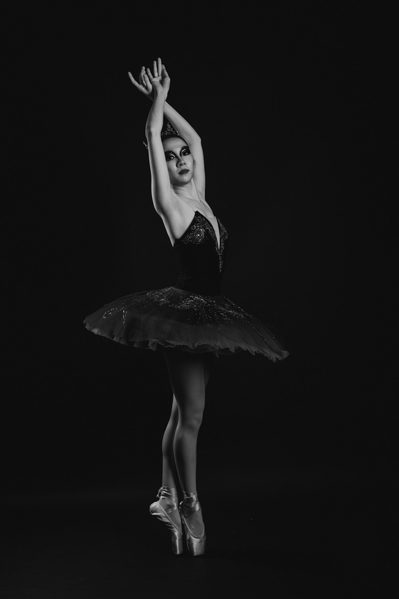
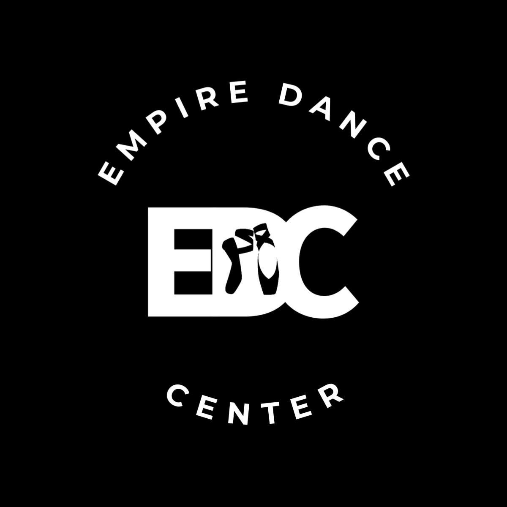
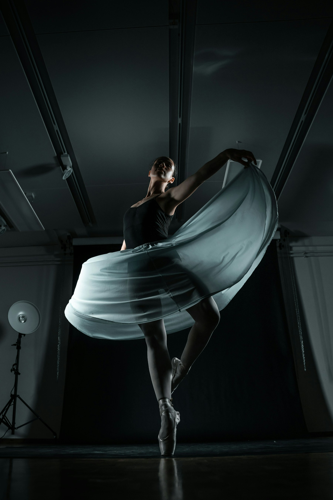

01EL PRIMER PASODescubre la danza
Una ruta de iniciación para explorar el movimiento y encontrar tu ritmo.
Quiero conocer esta ruta ↗
Agenda tu clase ↗
EMPIRE DANCE CENTER
Un espacio para expresarte, descubrir tu fuerza
y hacer de la danza parte de tu historia.
01 / ENCUENTRA TU LUGAR
No necesitas tener todo resuelto.
Explora una ruta para empezar
desde donde estás.

01EL PRIMER PASOUna ruta de iniciación para explorar el movimiento y encontrar tu ritmo.
Quiero conocer esta ruta ↗Un siguiente paso para profundizar en tu práctica y trabajar nuevos objetivos.
Quiero conocer esta ruta ↗Una ruta para conectar técnica, interpretación y presencia escénica.
Quiero conocer esta ruta ↗02 / LA EXPERIENCIA EDC
Aprender danza es descubrir lo que puedes construir con práctica, sensibilidad y ganas de seguir.
Encontrar una ruta que acompañe tu experiencia.
Dar valor a cada ensayo y a cada nuevo descubrimiento.
Hacer espacio para la expresión y la conexión.
Enfoque editorial propuesto, pendiente de validación con la academia.
03 / CÓMO EMPEZAR
Comparte tu experiencia y lo que te gustaría explorar.
La academia te orientará sobre opciones, edades y horarios disponibles.
Recibe la confirmación y los detalles antes de asistir.
EL SIGUIENTE CAPÍTULO
Así imaginamos el futuro portal para alumnas y familias:
asistencia, objetivos, avances y avisos en un solo lugar.
04 / ANTES DE EMPEZAR
Las respuestas se completarán con
la información oficial de EDC.
La propuesta contempla una ruta de iniciación. La academia confirmará los grupos y requisitos adecuados para cada persona.
El catálogo de disciplinas, edades y niveles está pendiente de confirmación con Empire Dance Center.
En la versión final podrás solicitar información del programa que te interese. Horarios, cuotas y disponibilidad se validarán con la academia.
La academia te indicará vestimenta, materiales y detalles de llegada al confirmar tu clase.
05 / NOS VEMOS EN CLASE
Cuéntanos qué buscas.
El resto lo descubrimos en movimiento.